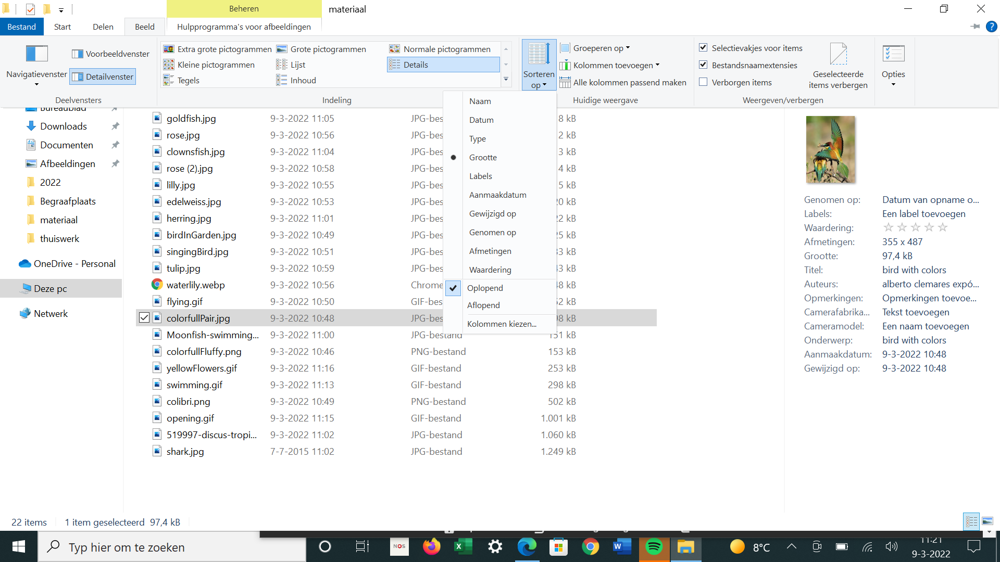
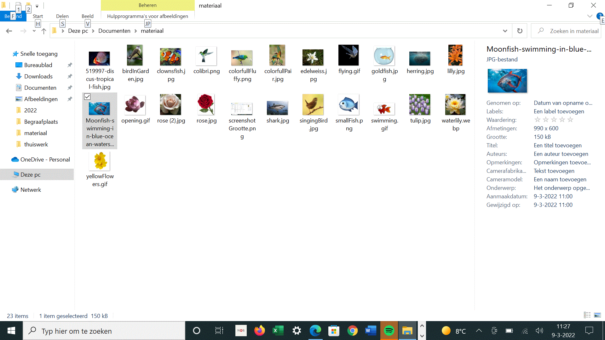

Intro to computers
Lesson 4
Files & folders

Contents lesson 4


Shortcut to open file explorer
- ⊞ Win + E Open new Explorer window
List

Sort by size

Sort by name

Exercise
- Create a folder-stucture like the image here on the right side.
- create a folder with the name files_folders;
- create folders inside this named: documents and pictures;
- inside pictures create folders birds and fish and flowers;
- Download the images and the other linked files from this page.
- compress the files_folders folder to a zip-file and share it with me.